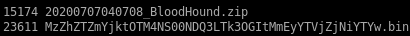
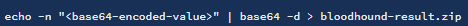

- nmapAutomator
- ldap
- Initial Foothold
- smb
- password spray user accts w/ custom password list
- getNPUsers.py
- privesc
- sharphound
- run SharpHound.exe on victim
- encode/copy/paste files back to attack machine
- OR set up smb share between attack and victim machines
- neo4j
- attackpath
- user/root
- Lessons Learned
encode/copy/paste files back to attack machine

we want to run  on our attack machine
We need to transfer the ZIP file to our attack machine. To do that, base64 encode the file.


certutil -encode
Then output the base64 encoded file.

Copy it and base64 decode it on the attack machine.

Drag and drop the zipped file into BloodHound. Then set the start node to be the svc-alfresco user.